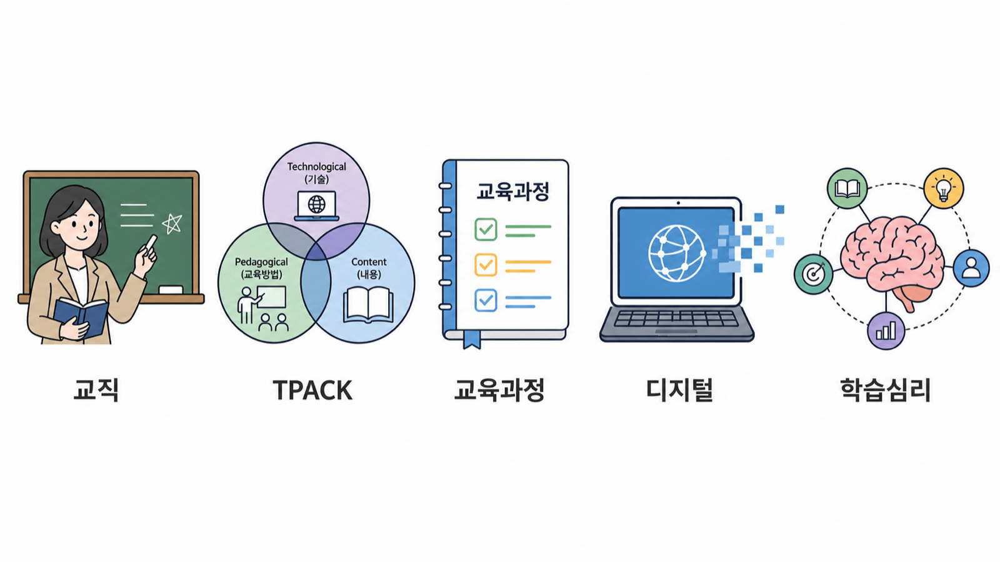
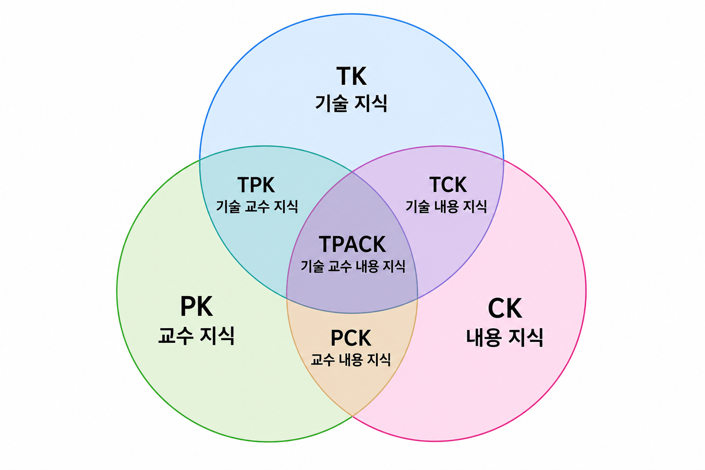
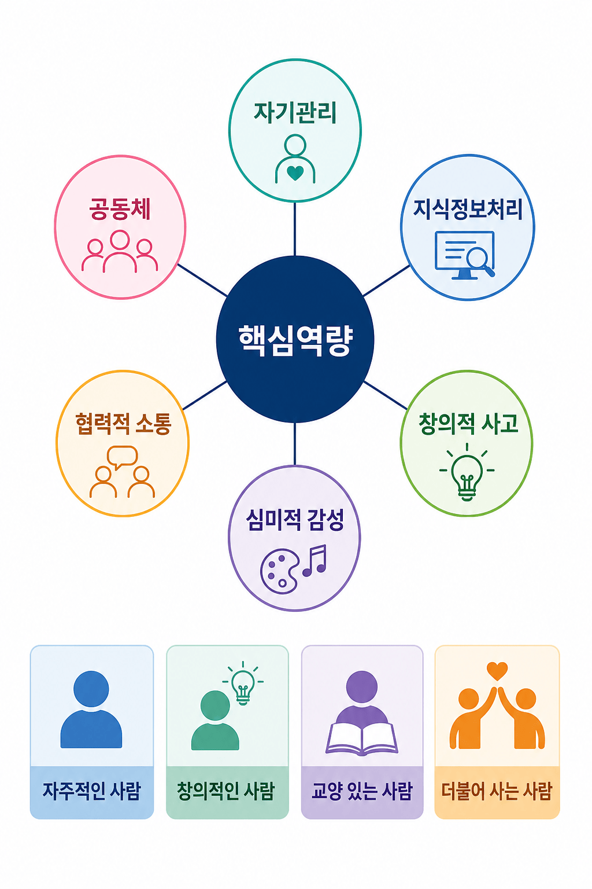
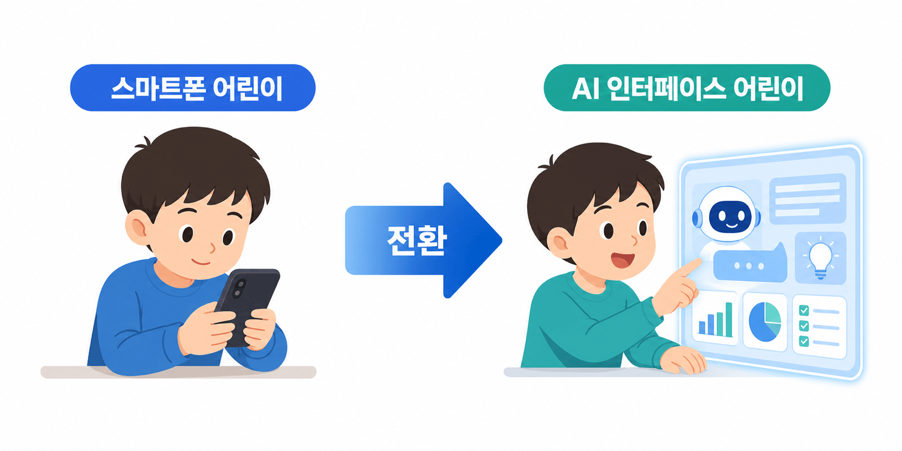
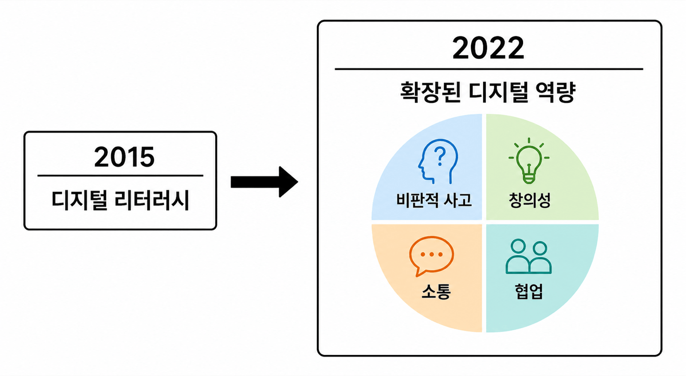
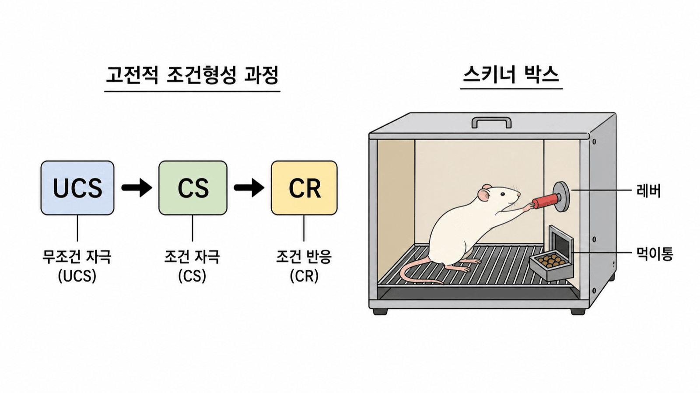
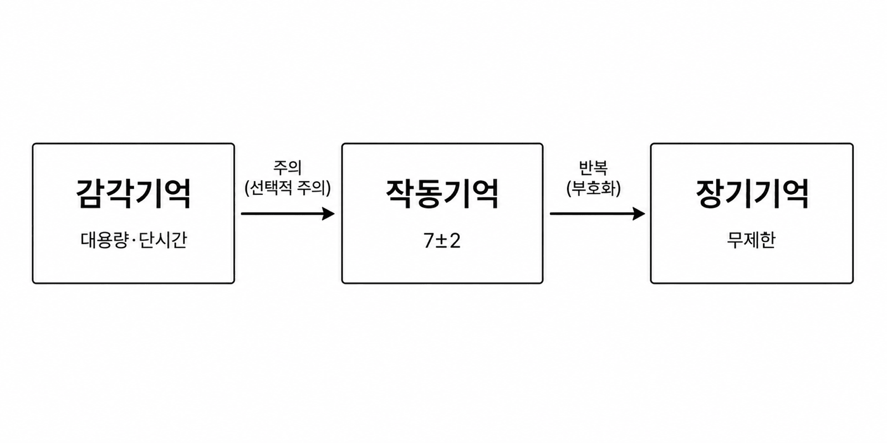

안내 질문: 교육공학 지식이 교사의 수업 역량에 어떻게 기여하는가?
| 역량 영역 | 세부 역량 | 관련 과목(예시) |
|---|---|---|
| 현장 적합성 | 수업 설계·실행 | 교육방법 및 교육공학 |
| 현장 적합성 | 학습자 이해·지원 | 교육심리, 특수교육학 |
| 현장 적합성 | 학교 현장 이해 | 교직실무, 학교폭력예방 |
| 인성 | 교사 윤리·성찰 | 교육봉사, 교직소양 |
| 역량 요소 | 내용 |
|---|---|
| 수업 설계 | 교육과정 분석·성취기준 기반 수업 계획 |
| 수업 실행 | 다양한 교수법·매체 활용, 상호작용 촉진 |
| 수업 성찰 | 자기 평가·동료 피드백 기반 수업 개선 |
| 디지털 활용 | AI·디지털 도구의 교수·학습 통합 적용 |
세 핵심 지식: TK(기술 지식) · CK(내용 지식) · PK(교수법 지식)
교차 영역: TCK · TPK · PCK → 중심: TPACK

안내 질문: 2022 개정 교육과정이 교사의 수업 설계 방식에 어떤 변화를 요구하는가?
6대 핵심역량
추구하는 인간상

| 원칙 | 핵심 내용 |
|---|---|
| 가. 깊이 있는 학습과 핵심역량 | 핵심역량 함양, 성취기준 기반 탐구·토의·프로젝트 학습 |
| 나. 능동적 참여와 학습의 즐거움 | 학생 능동적 참여, 토의·토론·체험·탐구·협동 학습 |
| 다. 학생 맞춤형 수업 | 학습자 특성·수준 고려 맞춤형 수업, 지능정보기술 활용 |
| 라. 유연·안전한 교수·학습 환경 및 디지털 학습 환경 | 디지털 기반 학습 환경 구축, 안전하고 유연한 환경 조성 |
안내 질문: AI 네이티브 세대의 특성이 교사의 수업 설계에 무엇을 요구하는가?


안내 질문: 세 학습심리학 패러다임이 각각 어떤 수업 설계 원리를 제안하는가?
고전적 조건화 (파블로프): 중성 자극 → 조건 자극 → 조건 반응
조작적 조건화 (스키너): 강화·처벌로 행동 빈도 조절

감각기억 → (주의) → 작동기억 → (부호화) → 장기기억
작동기억은 제한적이므로 정보는 의미 단위로 조직하고 불필요한 인지 부하를 줄여야 한다

| 구분 | 행동주의 | 인지주의 | 구성주의 |
|---|---|---|---|
| 학습 정의 | 행동 변화 | 정보 처리·저장 | 의미 구성 |
| 핵심 원리 | 강화·처벌 | 작동기억·청킹 | 도식화·ZPD |
| 교사 역할 | 강화자 | 정보 제공자 | 촉진자·비계 |
| 수업 적용 | 목표 명세·반복 연습 | 선행조직자·멀티미디어 | 탐구·협력학습 |
| 대표 학자 | 파블로프·스키너 | Miller·Mayer | 피아제·비고츠키 |